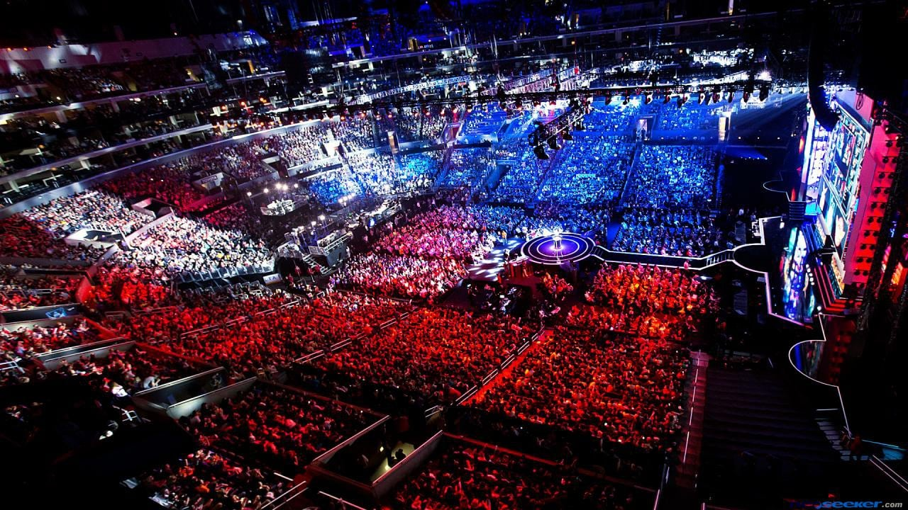

E-sport
En route pour une finale Chine / Corée du Sud

Samedi 31 Octobre aura lieu la finale des Worlds entre 2 équipes situées à l'est du globe , Suning 2ème seed chinois contre Damwon Gaming 1er seed sud-coréen . Si vous avez peu suivi la saison régulière des ligues asiatiques cette année, il est possible que les deux équipes finalistes du mondial ne vous parle pas cette année. C’est compréhensible : Suning, créée il y a seulement 3 ans, est entrée dans son premier mondial alors que DAMWON comptabilise sa seconde participation seulement. Quant aux joueurs, une grande partie n’a pas passé leurs 21 ans et certains sont même à leur première saison de carrière professionnelle. Voici tout ce qu’il faut savoir sur les grands finalistes de 2020.
Les favoris : DAMWON Gaming, champions de Corée du Sud

DAMWON Gaming est, depuis le début du tournoi international, pressentie comme la grande favorite pour soulever le Summoner’s Cup. Et jusqu’ici, les joueurs ont été à la hauteur de leur réputation. L’équipe n’a concédé que deux points à ses adversaires tout au long du mondial : une fois dans la phase de groupes, et en demi-finale contre les européens de G2 Esports, qu’elle a emporté 3 à 1. D’ailleurs, quand G2 a réussi à prendre ce point, une série de 24 victoires d’affilée de DWG sur le blue side a été brisée. Une maigre consolation pour le dernier espoir de l’Europe qui est revenu dans le vieux continent après cette défaite. D’un autre côté, DWG a battu un record : elle a remporté la dernière partie dans un temps record de 19 minutes. Du jamais vu dans l’histoire des mondiaux de League of Legends. À quoi est dûe cette domination ? Pour l’AD carry de G2 Luka “Perkz” Perković, l’une des forces de DWG dans cette compétition est la meta qui favorise leur style de jeu, avec les junglers qui farm plutôt que de faire des ganks, ou encore l’importance cruciale des objectifs sur la Faille avec les dragons élémentaires. « Ils se sont aussi beaucoup mieux préparés ces derniers mois », a-t-il ajouté dans la conférence de presse post-match. Les joueurs et le coach de G2 ont raconté se rendre compte d’un retard énorme des équipes européennes sur la lecture de la meta en arrivant à Shanghai, ce qui s’est constaté dans leurs résultats. Mais cela ne retire rien au mérite des joueurs de DWG qui ont tous brillé sur leur rôle cette année en Corée du Sud, puis sur la scène internationale.
Les underdogs : Suning, les rookies inattendus de Chine
DAMWON Gaming et Suning partagent un style de jeu similaire, agressif et centré sur les objectifs, qui est plus populaire dans la ligue chinoise que coréenne. Les deux équipes ont un autre point commun : leur histoire au cours de la saison. Si DWG a fait une ascension fulgurante au cours de l’été dernier, elle est encore plus impressionnante du côté de Suning, notamment car l’équipe partait d’encore plus bas. L’équipe n’a été au complet qu’au milieu du Spring Split avec l’arrivée du toplaner Bin, un talent de 18 ans qui a fait une arrivée très remarquée. Une fois qu’il a pris ses marques, Bin s’est fait connaître comme le maître des duels en toplane, avec le plus grand nombre de solokills du Summer Split. Pourtant, quand ce dernier a rejoint l’équipe, les attentes pour Suning étaient basses. L’équipe était pressentie comme une équipe de milieu de classement. Certes, elle possédait de bons joueurs, comme deux vétérans reconnus : le vietnamien SofM à la jungle et le taiwannais SwordArt en support, mais elle ne parvenait pas à construire une bonne synergie. Ce problème a pris fin au Summer Split : les joueurs sont devenus très bons pour sécuriser les objectifs en early et en teamfight. SofM, considéré comme un “jungler carnivore” avec un style bien à lui, s’est vite imposé comme l’un des meilleurs junglers de Chine. Et maintenant, avec sa performance aux Worlds, l’un des meilleurs au monde.